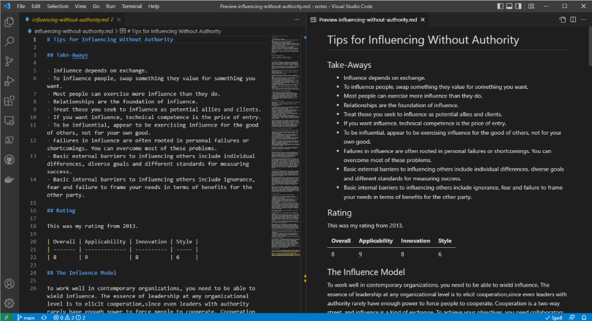

layout: true --- background-image: url(images/eac-background.png) background-position: center; background-repeat: no-repeat; background-size: contain; # # Everything as Code <br> <br> .right[] <br> <br> <br> <br> <br> <br> ## ## A DevOps Primer ??? Notes: --- class: inverse ## ## My DevOps Journey <br> <br> <br> ??? Notes: Some quick background on myself. - I was your traditional Windows (lazy) administrator automating everything I could. - In 2016 I went to my first DevOpsDays and had an incredible awakening. - As a part of that, I became the product owner for Chef in our organization. --- ## ## Purveyor of the Banana Stand <br> <br> ??? - My responsibilities were to build and run a team to support Chef for more than 60 thousand endpoints. - Being the manager of the program, I relied on my team to carry out all of the ground level duties to stand up and support the deployment, infrastructure and everything that needed to be done. - I was Mr. Manager. Buy this mug at https://www.entertainmentearth.com/product/arrested-development-mr-manager-11-oz-cereamic-mug/cup08892 --- class: inverse ## ## INFRASTRUCTURE as CODE <br> ??? - So Chef was really my first foray into anything as code. - If you are not familiar with Chef, it is a Desired State Configuration Management tool that allows you to codify your system configurations. - This is INFRASTRUCTURE AS CODE at its core. Chef also dives in to COMPLIANCE AS CODE with INSPEC and together we call that POLICY AS CODE. - Find me later if you want to learn more. --- ## ## Building a DevOps Team <br> ??? - So, with all of that in mind and a lot of transformation to do, I build a “DevOps Team” and yes, I know how cringey that is. - But I built a team of some ruby and Chef developers, folks from an Operational background and set up all of the best Agile DevOps frameworks around how we were going to operate. --- class: inverse ## ## Advocate Development Practices <br> <br> <br> ??? - In the organization, I became an advocate for development practices. - Shifting work left if you will. We build pipelines for our Chef code. - We evangelized for the that shift in practices. I was telling people how to move to move work into an SCM. - But, myself, I never really had the opportunity or need to really practice it. --- ## ## CHAT AS CODE <br> <br> <br> ??? - As one of our awesome DevOps practices, I introduced my team and our internal customers to ChatOps. - Being a DevOps advocate, it was important to open communications. - Using Flowdock as our chat tool (rest in peace), I began discovering the awesome capabilities of Markdown. - There are other tools that support markdown natively. TOOLS THAT SUPPORT MARKDOWN - Tools | Markdown Guide --- class: inverse ## ## EVERYTHING as CODE - Aha! <br> ??? - I then started wondering where else I could start using markdown. How could I take that and apply it to other areas of my everyday live. - And then one day thanks to corporate politics, our world of documentation management changed. Enter DOCUMENTATION AS CODE. --- ## ## DOCUMENTATION as CODE <br> ??? - All of our customer facing and internal team documentation was on Confluence, Jive and Sharepoint. - We had moved platforms 3 times in about 5 years. - And it was time to take control of our destiny and run our own platform. - That is when we discovered Docusaurs, and that is what drove us to DOCUMENTATION AS CODE. --- class: inverse ## ## Pipelines for Everything! <br> <br> <br> <br> <img src="images/pipelines.png" class="center" width="750"> ??? - We built a simple pipeline to publish and host our new documentation site. - Once I understood the pattern, I started to reach out to others that were trying to understand the concepts of DevOps. - I did demos for them. Lots of demos. And taught them all about DOCUMENTATION AS CODE and how they could get started. - Others in our DevOps community started to catch on too and it began movement in the organization to where we had hundreds of “micro-sites”. --- ## ## TRAINING as CODE ??? - Next up was understanding how I could apply this to a training program that I was working on how to deliver. - One thing that I loved about this DOCUMENTATION AS CODE was that anyone who was taking the training could edit the code easily enough and put in a pull request. - If I was giving the training, I could edit as I went, keeping the code updated. A few seconds after committing, the changes were live. - This also helped me imprint the developer mindset as I was delivering the content. --- class: inverse ## ## PRESENTATION as CODE ??? - As I embraced more and more as code, I started to replace my Microsoft toolset with anything I could do AS CODE. - With tools such as Remarkjs, you can include Markdown. This is my presentation for “My DevOps Journey with Chef” that I gave at our Sales KickOff event this year. - This presentation is also AS CODE. You can find it at https://github.com/snohio/eac/docs/eac.html --- ## ## NOTES as CODE  ??? - And thanks to VSCode and its integration with GitHub, every day I use markdown for all of my notes. - This has replaced my use of OneNote entirely. - I use it for technical writing, personal reflection, client discussions, and just about everything I would keep elsewhere. - It is fully searchable in VS Code or directly in GitHub. - Most of my repos are private, but it also allows me to easily publish things I want to share with others. --- class: inverse ## ## Easy Publishing ??? - Here I have the readme in my Docs folder which is published with Github Pages*. - It simply renders the markdown as web content without all of the features of a Docusaurus or MKDocs. - You can also build git-actions to approve, test and deploy. --- ## ## MEETINGS as CODE <br> ??? - Another thing I started to do was use Github and markdown for all of my team meetings, town halls and more. - Using a Kanban style project board, I would create issues as topics to discuss, and move them across the board as we completed those topics. - Adding in notes for the topics was helpful and allowed us to have a good history of what we went over. --- class: inverse ## ## DevOps Lean Coffee ??? I have also used this format to host bi-weekly Virtual Lean Coffee events. - If you aren't familiar with Lean Coffee, it is similar to the Open Spaces we will be having here in a bit. - We would use Github Issues and Projects by adding topics to discuss prior to the meeting then vote and sort the topics on the Projects board. - We would then move them across the board after discussing each for five minutes. You can learn more at LeanCoffee.org. --- ## ## FIRST ROBOTICS as CODE <br> ??? - This year I was a mentor for my son's First Robotics Team - Team 4024 - The Jokers. - This is their robot. - At the competition we employed the NOTES as CODE with Markdown as well as some other Agile DevOps practices such as using kanban for things that needed to be completed on the robot. --- class: inverse ## ## VSCode Online <br> <br> <br> ??? - Some of the students would sit with me in the stands and using VS Code online, they would take notes of each round for practice and qualifications. - This would help them know who to work with in the upcoming matches. - They would also take notes about their robot and perform a merge so that the students in the pits would get the notes before the robot made it back. --- ## ## RETROSPECTIVE as CODE <br> ??? - The following Monday, I led the students through a Retrospective to help them understand the positives of the event and where the had some troubles. - This was also published using Markdown and available to the whole team when they were ready to start thinking about next year. --- class: inverse ## ## THANK YOU as CODE <br><br> ### ### The Products Discussed - Progress Chef - Github - Docusaurus - Microsoft VS Code - Jenkins <br><br> <br><br> <br> ### ### How to find me - [email](mailto://snohio@gmail.com) snohio@gmail.com - [linkedin](https://www.linkedin.com/in/mike-butler-6401634/) - Mike Butler on Chef Community Slack ??? - So, as you can see, almost everything can be done